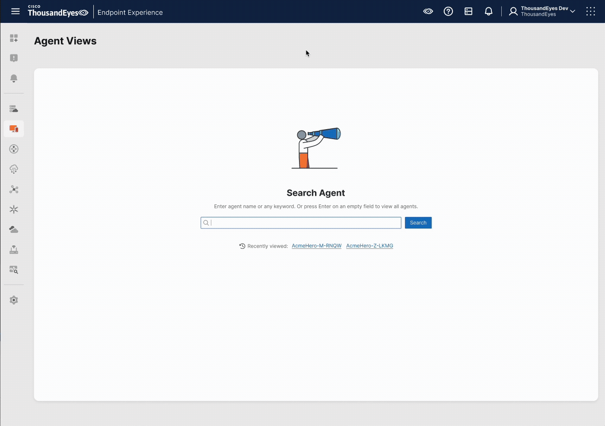

Overview
I designed the Single Agent View for End-User Monitoring, a dedicated troubleshooting experience for Tier 1 and Tier 2 IT helpdesk teams investigating an individual employee’s connection problem.
The experience helps support teams understand what a specific endpoint agent is experiencing—from local network conditions to performance across applications—and identify where to investigate next.
Challenge
Existing scheduled tests provided an aggregated view of a group of endpoint agents testing a single application. This was useful for identifying broad issues, but it did not explain why one employee might be having a poor experience.
Each endpoint agent can have different local network conditions and different performance outcomes across applications. Helpdesk teams needed a way to move from a reported employee issue to relevant, agent-level network and application insights.
My Role
As the sole designer for the Single Agent View experience, I:
- Defined the agent-level troubleshooting information architecture
- Designed the end-to-end Single Agent View and supporting interaction patterns
- Iterated on the design based on customer feedback, usability testing, and technical constraints
- Applied progressive disclosure to balance fast triage with in-depth diagnostics
- Presented concepts to customers and validated designs through customer testing
- Explored AI summaries for the troubleshooting workflow
Outcome
The Single Agent View creates a dedicated lens for investigating an individual employee’s digital experience. It helps helpdesk teams move beyond group-level test results to understand agent-specific network conditions, application performance, and potential causes of a reported connection issue.
